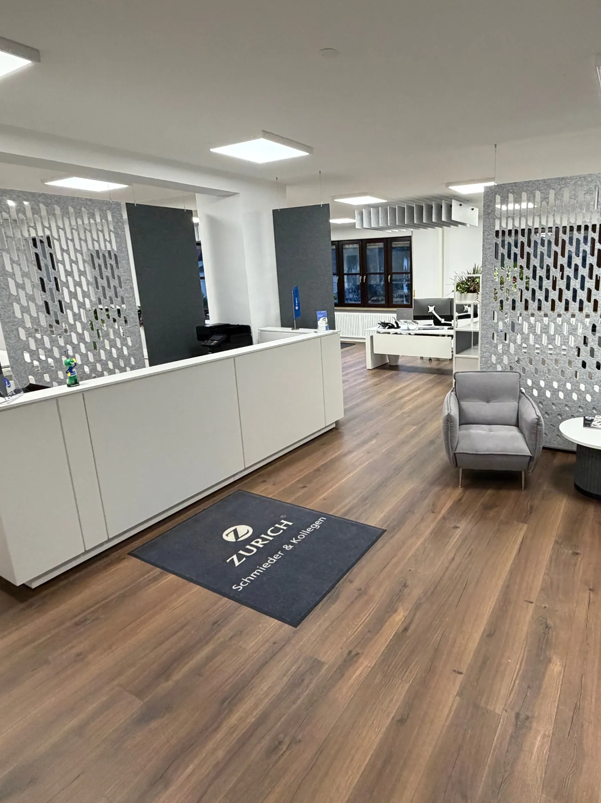
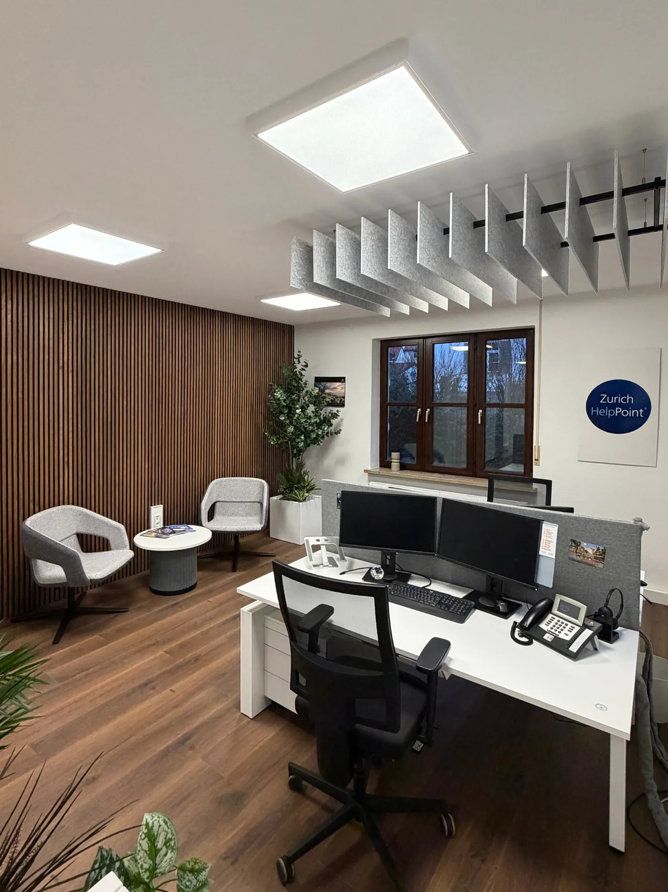
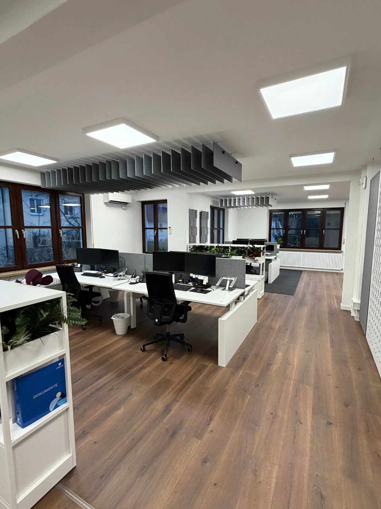
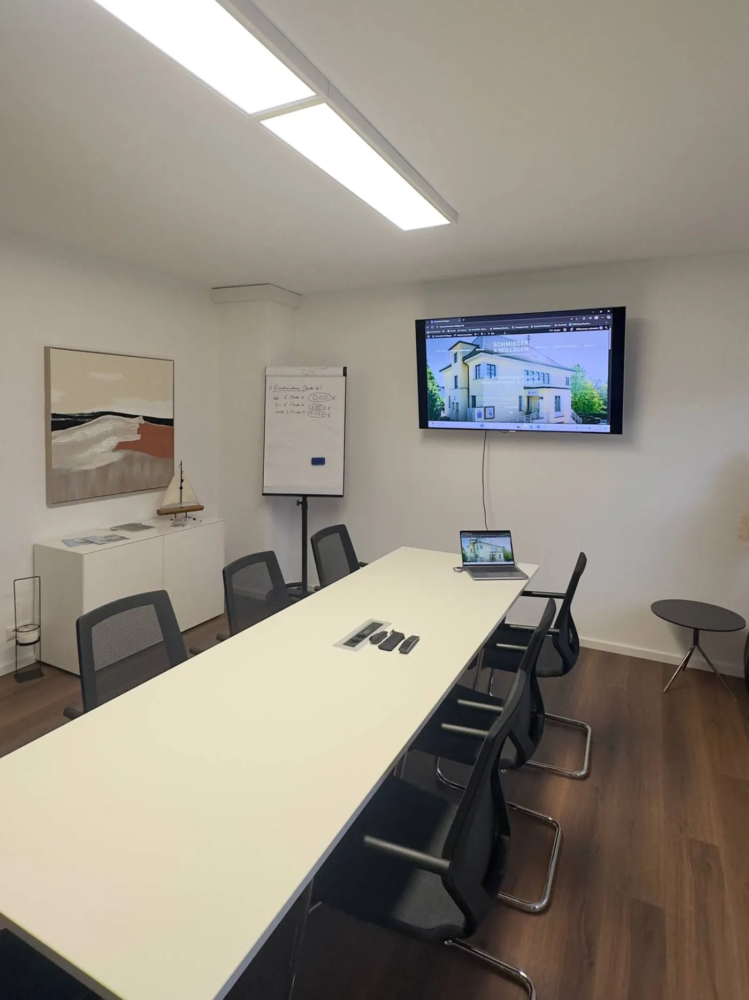
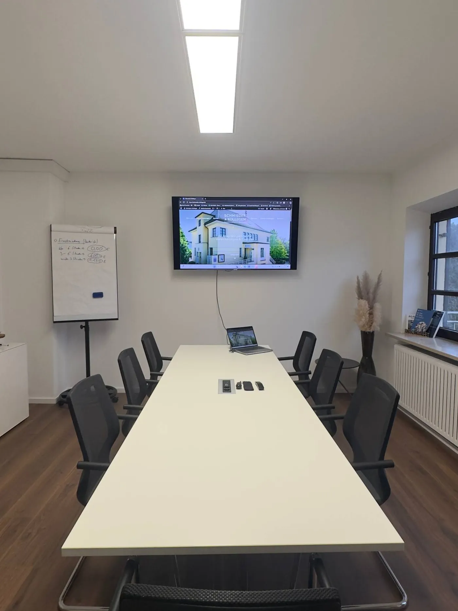
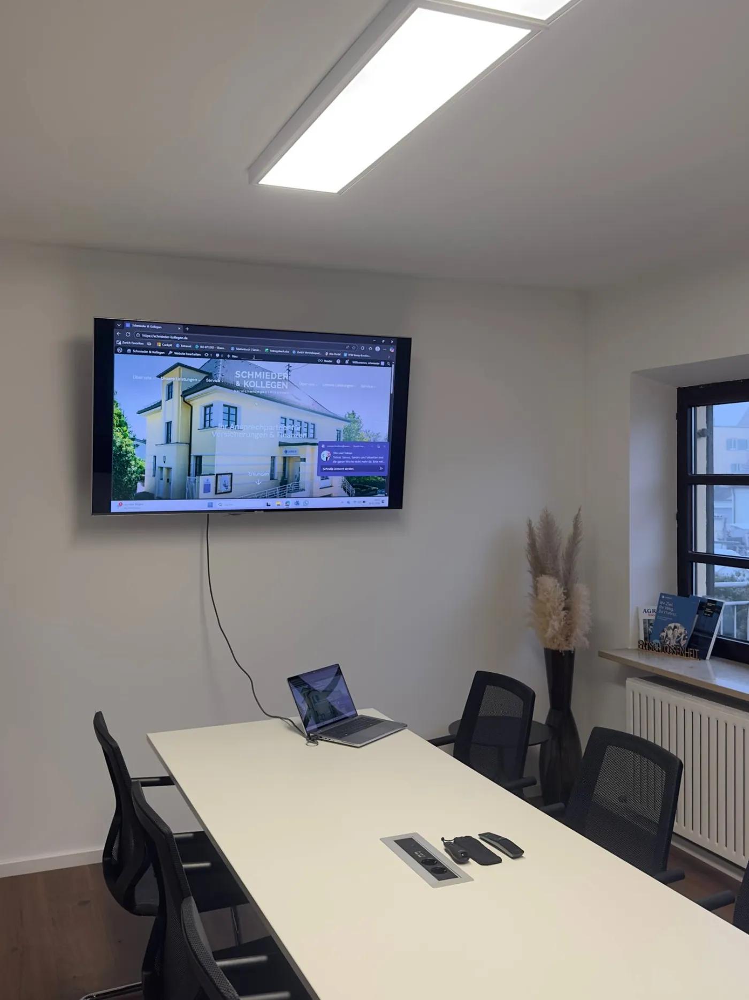

Stilvolle Räume mit Charakter.
Unsere Kanzleiräume befinden sich in einer stilvollen Altbau-Villa und verbinden klassischen Charme mit moderner Raumgestaltung. Helle Räume, hochwertige Materialien und eine klare Struktur prägen das Gesamtbild.



Konferenzraum für Besprechungen.
Im zweiten Stock verfügen wir zusätzlich über einen separaten Konferenzraum. Dieser ist modern gestaltet und bietet eine ruhige Umgebung für Besprechungen und Meetings.



Drei Standorte. Ein Anspruch.
Unser Hauptsitz in Friedberg wird ergänzt durch Niederlassungen in Langweid am Lech und in der Region Günzburg — damit wir dort für Sie da sind, wo Sie uns brauchen.
Friedberg · Hauptsitz
Bauernbräustr. 27, 86316 Friedberg — unser Stammsitz mit voller Beratungskompetenz.
Langweid am Lech
Niederlassung für persönliche Gespräche in ruhiger Umgebung.
Region Günzburg
Kundennähe auch im westlichen Schwaben.
Digital
Videoberatung — zeitsparend und ortsunabhängig auf Wunsch.